28th to 30th July 2024
That's right, we made it. A world famous town thanks to it's casino packed strip; In this article I'll fill you in on everything we saw in Las Vegas.
We arrived in afternoon of the 28th, checking into a hotel room in the Sahara Resort. The room was $50 a night and was by far the best value for money room my girlfriend and I had stayed in so far on this trip. Nice comfy bed, big mirror and access to 2 pool areas it was a very glamorous place to stay. And as this is America, plenty of (free!) parking.
The Sahara Hotel is at the top end of the Las Vegas strip. After settling in to our room eating a bit of food we headed South towards the nightlife of this crazy luminous town.
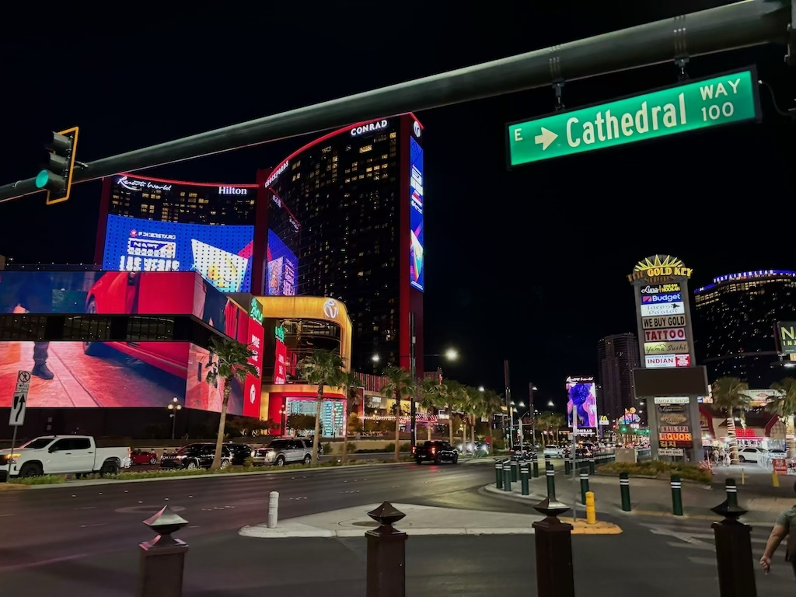Luminous it was! No building was spared from being caked in lights, decoration or LED screens. Adverts popped out at you from signs, cars and entire hotel building sides. It's enough to make you forget to look as you cross the road.
Not wanting to stay out too late on our first night we turned around next to the Hilton Hotel, although en route we did decide to explore one casino.
Circus Circus
If the huge clown sign, tent roof or name wasn't evidence enough for you, I can tell you this casino is circus themed. Big glittery lights line the building entrance where residents get our of their cars for valet service.
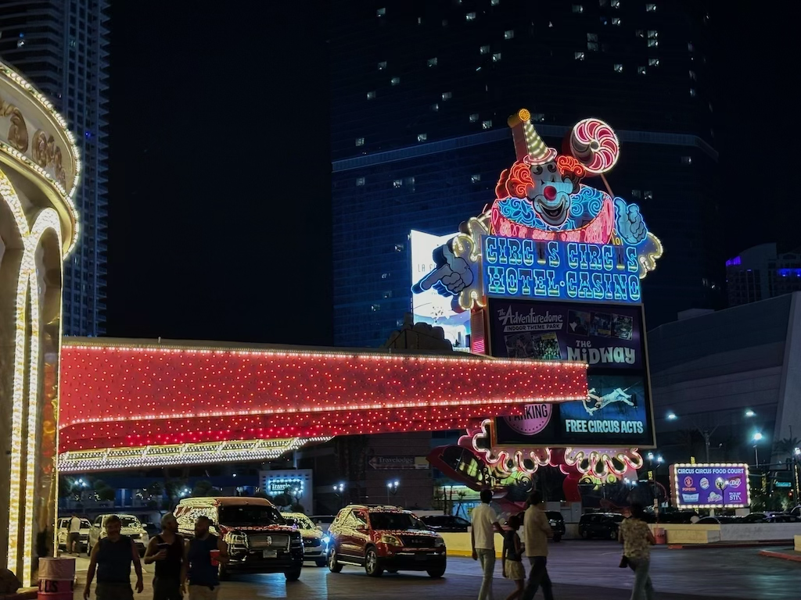The first building you enter into is Slots a Fun - a large floor simply covered in slots. I found the sounds of the casino floor unique here; where other casinos are noisy with people and music Slots a Fun was noisy with the rattling of quarters. Almost all the machines in the immediate area were quarter (25 cent) coin slot machines. Being so cheap I chucked a couple of quarters into one and by pure luck walked about about 75 cent richer.
If you investigate further into the casino you will eventually walk into the theme park. This was the main reason I wanted to go into Circus Circus (most reviews were fairly negative), people were claiming there was a full theme park inside the casino. Although fairly dated and of course full of kids up past their bedtimes, Adventuredome was in fact that.
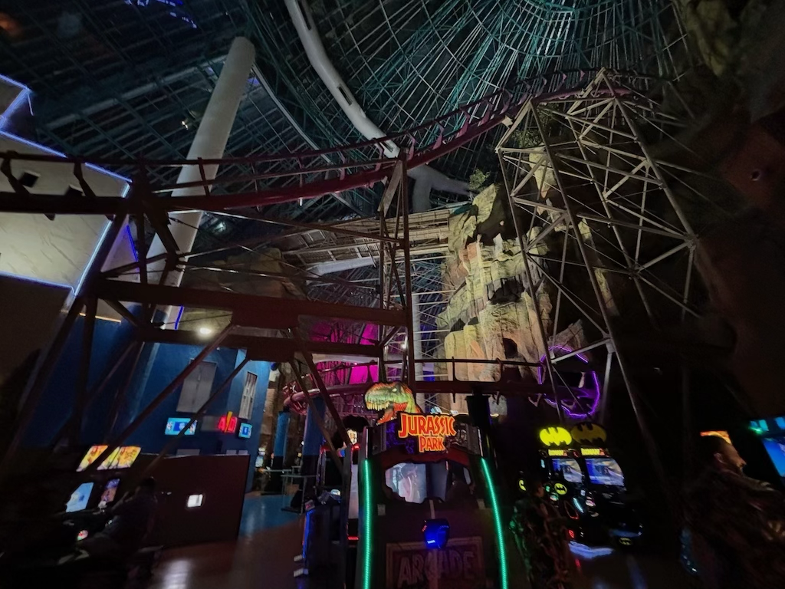Entry was free but every arcade game and ride had a cost per ride. I realised how much I preferred the Thorpe Park model of paying entry and every ride inside is free, although if you just want to see the place this does allow you to do so for nothing. The roller coaster was pretty big and went quite fast but we decided to not ride it; If your in Vegas for one night don't come here it really isn't that spectacular. Nonetheless the kids there seemed to be having a good time, I assume staying at the resort.
New York
New York
The key attraction to this casino is definitely its construction. The facade on its front are reconstructions of the cities major landmarks. The statue of liberty, brooklyn bridge and even a little replica skyline are all featured.
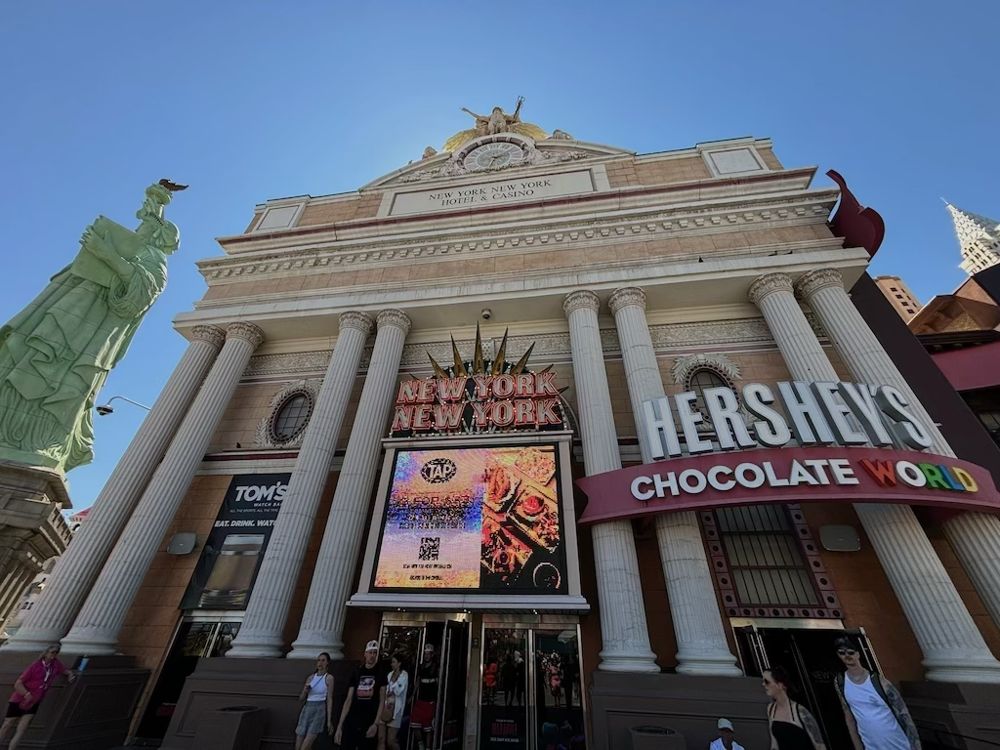Inside is a casino floor, hotel and a lot of shops. I assume the business model is to capitalize off the winners at the casino. Based on the surprisingly high number of families that were there I think appealing to children would've been more profitable.
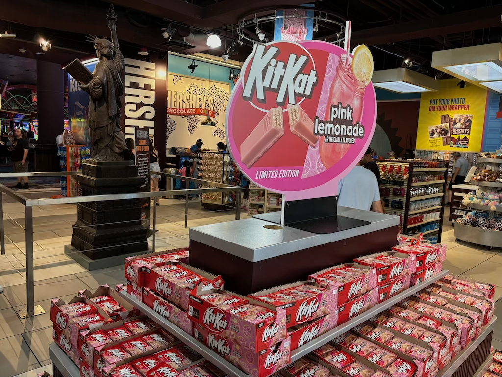Walkways between the casinos as photographed below take people up and down the strip, with lots of opportunity to see all the architectural oddities in Vegas. Below is a photo of the Excalibur casino which has a fantasy castle theme. Due to the long entrance flat escalators transport you under the castle towers and into the casino itself. At this point I began to realise how similar all the casinos looked on the actual casino floor. Due to new digital gambling machines they really didn't feel that different once you were among the actual machines.
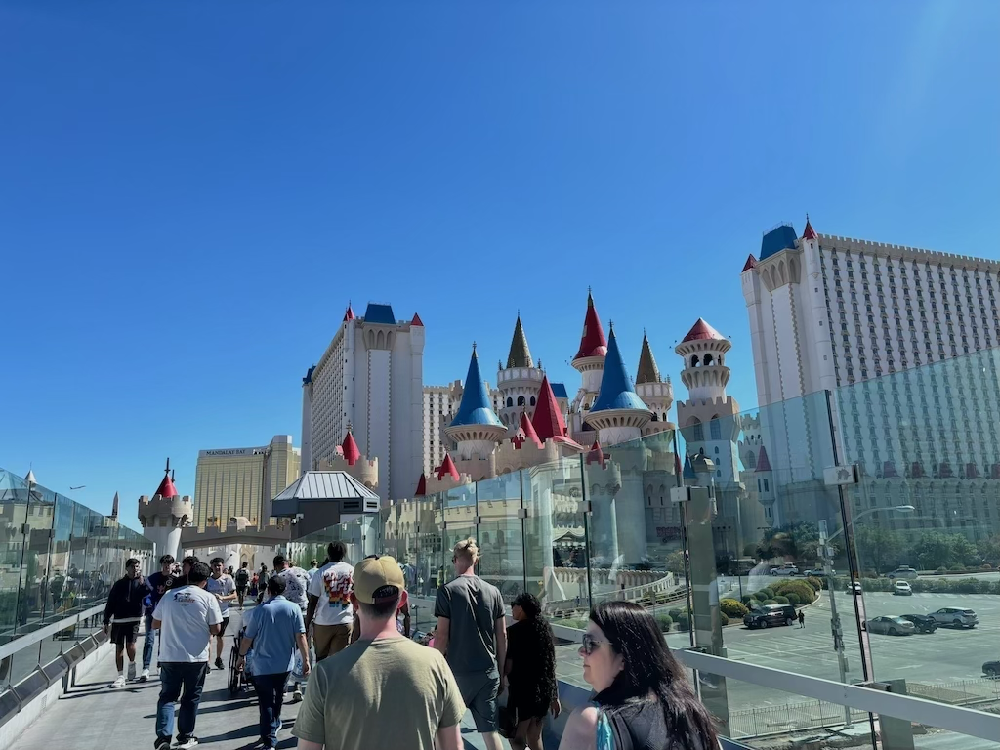Luxor
Another iconic building on the strip, the Luxor casino follows an Egyptian theme. It's sphinx entrance and pyramid hotel structure is really impressive. The sides of the pyramid must be an advertisers dream being huge, flat and completely unmissable. I am glad while I visited it was clean of anything, it's massive scale is very unclear in the image above.

Inside the building the typical design of a basement casino and everything else on top is present. While we visited a Titanic exhibit was on which featured lots of artifacts from the sunken ship. I took the image above to show the vast space inside the building. I kind of wished I stayed here; it would have been cool to look out from your hotel floor over the whole area.
The Bellagio
Famous for a variety of reasons (for me through the 2001 movie Oceans 11) the Bellagio is really something amazing to see. It is a lot more glamorous than the other casinos and is far less gimick-y. We watched a mid-afternoon run of the water fountain show which is every hour and free to see (it's literally next to the main road). The show during our time there was synchronized to the song My Heart Will Go On by Celine Dion.
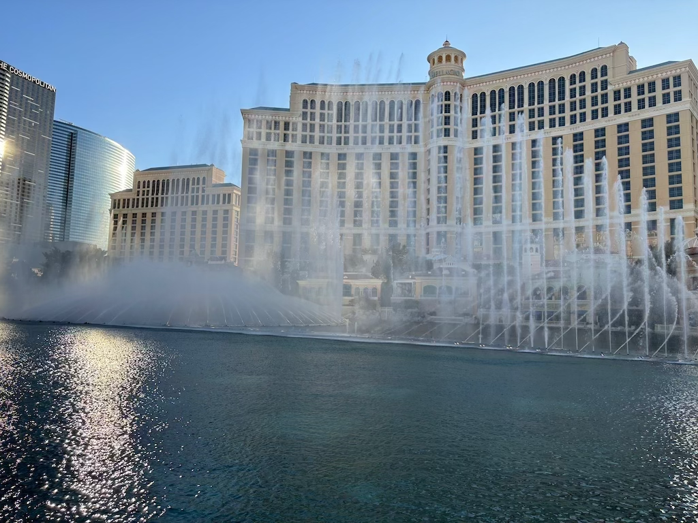Below is a photo from inside on of the busiest rooms - the Bellagio Conservatory & Botanical Gardens Models of balloons and fairytale creatures are covered in intricately planted flowers creating a really beautiful garden scene. Even the waterways around the footpath contained exotic fish such as koi carp.
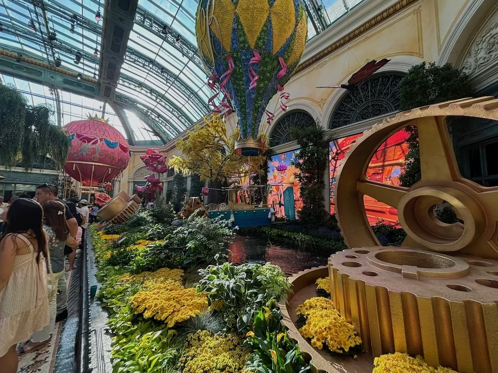Next up is another one of the more famous casinos, familiar to me through one of the Hangover movies.
Caesars Palace
Below is an image from the Forum shops. Above the walkway is a fake sky tinted pink and deep blue. It's more evidence of how Las Vegas design their casinos to help you forget what time of the day it is, keeping you inside longer and spending more money.
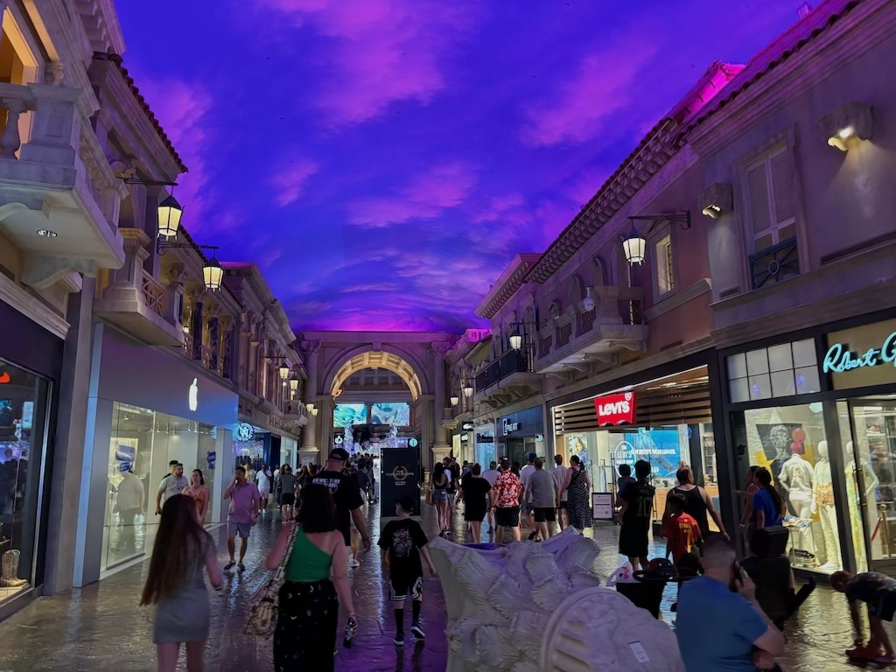We even watched a short animatronics show, with greek mythological characters. Water sprayers and flamethrowers were used to tell a story of a father and two children. It was one of those shows that were more entertaining through the props and machinery than the story itself.
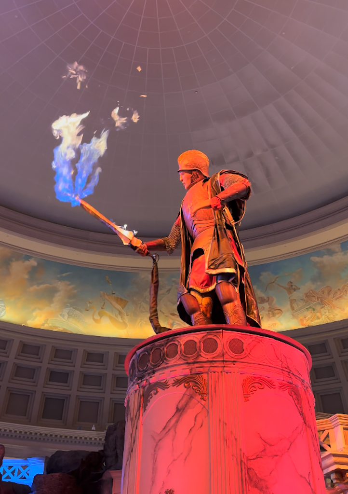One thing I was curious to find out about Las Vegas was how easy it is to get lost inside all the casinos. If you wander aimlessly the answer is definitely yes. The bridges shown before are just one way to walk between each establishment - underground walkways also connect everything lined with shops, bars and restaurants. These signs that are in most casinos are really quite useful.
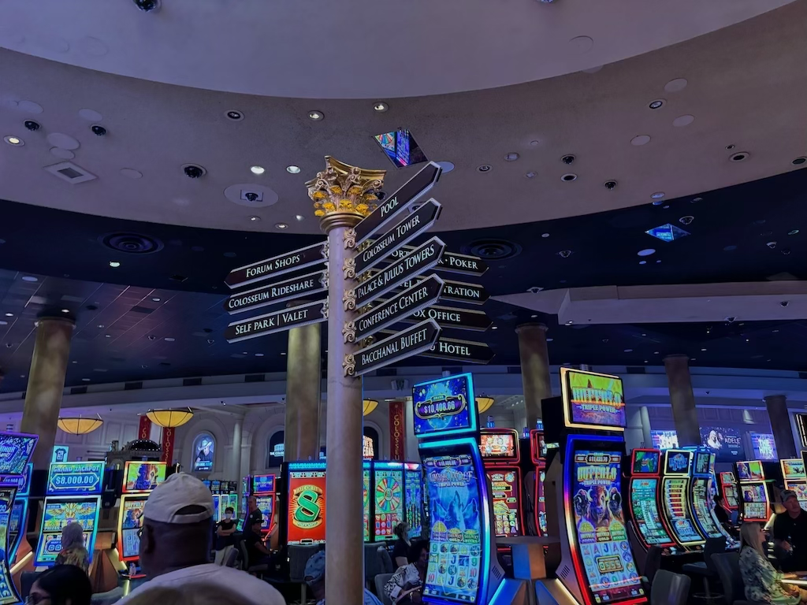The Venetian
The Venetian, one of the casinos built in 99', contains quite an odd sight. In the lower levels of the resort is a recreation of the Venice canals, with matching italian building facades along the sides. You can even ride a gondola along it's artificially blue rivers. In all honesty, my girlfriend and I were not impressed with this recreation. It felt quite tacky which in my opinion a lot of the strongly themed hotels are. After seeing actual Venice in Italy I'd say save your money and go see the real thing.
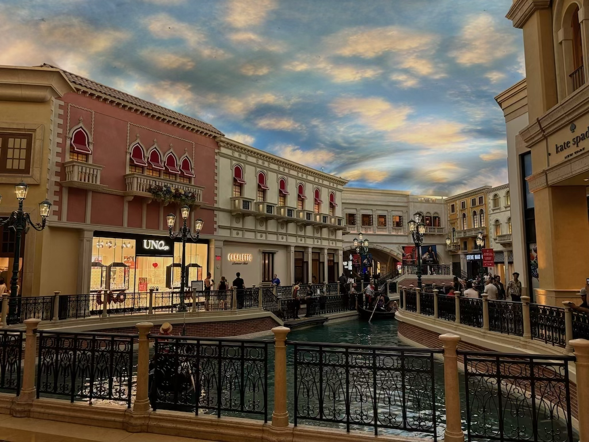At this point it was dark outside, which is the best time to see the Vegas strip. The air is cooler and everything is lit up. We exited the casino underground complex and I took this photo of the Wynn hotel lit up at night. The sky may be dark but everything else is lit like it's midday.
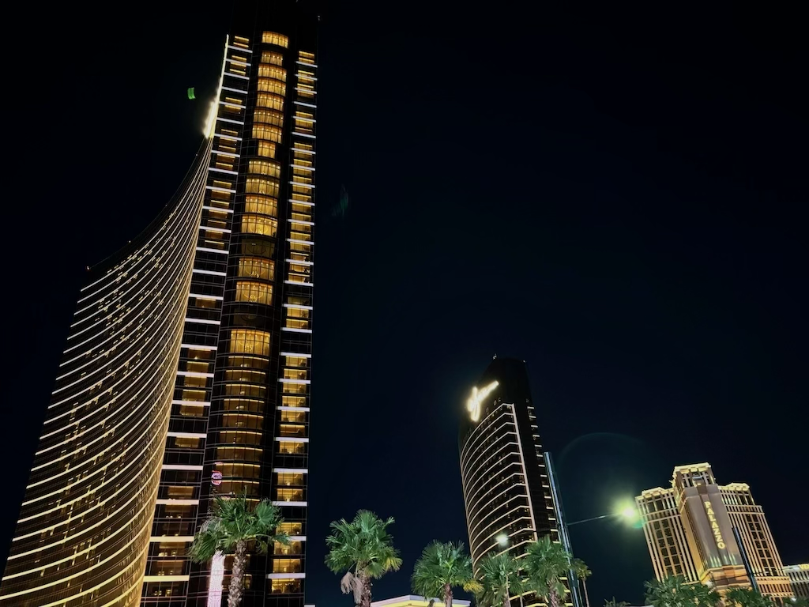After walking 30,000 steps and a loss of $12 dollars overall we headed back to the Sahara Resort to sleep.
After checking out of our room I wanted to visit one more sight in Las Vegas. Contrary to what you'd expect downtown LV and the strip are separate areas, I first thought to keep the gambling side of the town localized to one area. This however is wrong; the image below is a street we explored just before leaving town in downtown Las Vegas, and it has casinos. More notably it has a domed roof covered in LEDs which fully obscured the sky.
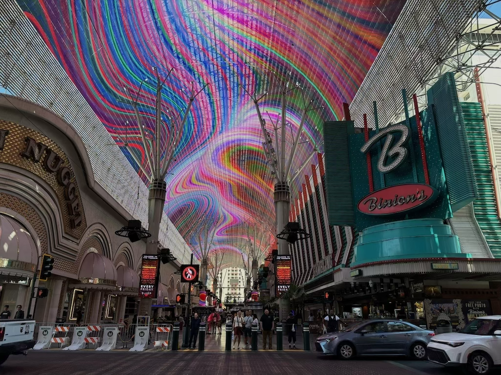It was pretty cool to walk down and experience, although I will say it changing from cool to annoying happened rather fast. The photo above shows one of the rare moments the sky is covered in digital art instead of advertisements. A casino called Slotzilla was advertising newly added slot machines the majority of the time. It's one of those rare places you can see adverts literally all around you in every direction.
That concludes our time in Las Vegas. I missed a lot out that we did on our huge exploration day in town, only showing the highlights of the things we saw here. Nevertheless we must move on; we drove out West straight towards California's national parks. See you then!